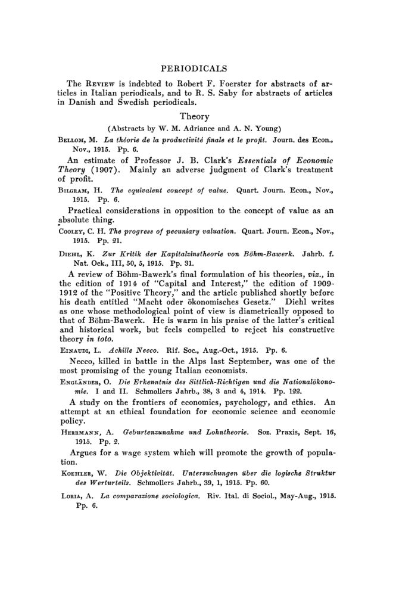

O lucro do pequeno negócio, o padrão de vida e a renda da fazenda
Leitura: 16 min
Sterrett compara lucros livres e regulados; Fairchild mede o padrão de vida operário de 1890 a 1908; Goldenweiser estima a renda da fazenda; Usher conclui que a bolsa trouxe certeza, não estabilidade.


Os 158 relatórios de auditoria que J. E. Sterrett tirou dos arquivos de sua firma somavam US$ 406.829.858 de capital investido em empresas sem regulação de preços. O lucro anual, depois de todos os custos, inclusive a depreciação, foi de US$ 55.613.659: 13,67%. As comissões estaduais de serviços públicos não permitiam mais de 8%. É com essa comparação que abre o número de março de 1916 da American Economic Review, o primeiro do vol. 6.
A edição é quase toda sobre medida de rendimentos e de preços. Henry Pratt Fairchild monta o orçamento de uma família operária para saber se o padrão de vida subiu ou desceu desde 1890. Harvey A. Wooster contesta a proposta de Henry C. Emery de calibrar tarifas protecionistas para que o consumidor não pague por elas, e Emery responde numa nota. E. A. Goldenweiser estima a renda média da família agricultora em 1909. Abbott Payson Usher compara mercados de trigo do século XVIII com os de 1911. Richard T. Ely resenha a reforma agrária russa, e L. R. Nash mostra como o crescimento das empresas altera as reservas de depreciação. Seguem resenhas, livros novos, documentos, periódicos, uma carta e notas.
Quanto rende o capital fora dos setores regulados?
J. E. Sterrett · “The Comparative Yield on Trade and Public Service Investment” · pp. 1–8
A pergunta de Sterrett é a das comissões de regulação: qual é o retorno justo sobre o capital de uma ferrovia ou empresa de serviço público? A resposta aceita era a taxa capaz de atrair capital suficiente. Para ele, isso remete à concorrência pelo dinheiro: o investidor escolhe, e compara o retorno regulado com o que obtém em atividades livres.
Os dados publicados não servem, porque os balanços misturam ao ativo intangíveis como fundo de comércio e patentes, que os reguladores excluem da base de cálculo. O Comptroller of the Currency informava que os bancos nacionais lucraram, em média, 8,64% sobre capital e reservas nos 45 anos até 30 de junho de 1914. Sterrett recorre então a auditorias de sua firma, escolhidas ao acaso e restritas às que permitiam separar os intangíveis, quase todas de 1912 a 1914.
Sterrett trata da objeção óbvia, a de que pequenos negócios subestimam salários de gestão, lembrando que excluiu os relatórios sem provisão razoável para esse item e que, desde a lei do imposto sobre sociedades de 1909, as pequenas empresas tendiam a pagar salários generosos aos sócios. A conclusão é dupla: o pequeno negócio não estava sendo esmagado e os reguladores ofereciam pouco.
“O tempo do pequeno negócio ainda não passou.” (“the day of the small business is not yet past”)
Em contraste, o retorno máximo admitido pelas comissões estaduais era de 8%, e às vezes menos; os tribunais federais aceitaram 7% no caso da Northern Pacific e 6% no caso tarifário do Arkansas, ambos de 1911. Sterrett sugere que a regulação permita uma distribuição justa aos donos e uma parcela para melhorias e reservas, a ser descontada do capital em cálculos futuros. Sem retorno atrativo, diz, o capital necessário à expansão dos serviços públicos irá para outros setores.
O padrão de vida do trabalhador subiu ou desceu?
Henry Pratt Fairchild (Yale University) · “The Standard of Living — Up or Down?” · pp. 9–25
Fairchild desconfia da comparação habitual entre índices gerais de preços e de salários: os índices são de atacado, incluem artigos que não entram no orçamento operário e a média de salários é quase impossível de calcular. Propõe uma régua: um orçamento-padrão de bens necessários, aplicado a duas datas, para ver quanto da renda sobra para o que chama de necessidades culturais, de médico e escola a lazer e poupança.
A família-padrão tem pai, mãe e três filhos menores de 14 anos e renda de US$ 600 em 1908, a fronteira usual entre trabalho não qualificado e semiqualificado. Os orçamentos de Chapin, More, Kenngott e Nearing indicam a divisão: alimentação 48%, moradia 20%, vestuário 12%, aquecimento e luz 6%. O autor detalha as quantidades: 20 pães, 6 libras de carne bovina e 7 quartos de galão de leite por semana, quatro cômodos a US$ 10 por mês, três toneladas de carvão por ano.
A parte decisiva é a renda de 1890. Fairchild testa quatro métodos. O que considera melhor divide a folha de salários da indústria pelo número de trabalhadores: US$ 444,83 em 1890, ante US$ 503,61 estimados para 1908, o que faria os US$ 600 equivalerem a US$ 530. Para não exagerar as condições de 1890, usa US$ 500; para o aluguel, supõe US$ 8 em 1890 contra US$ 10 em 1908. Uma comparação com dados de Massachusetts de 1882 aponta na mesma direção.
O autor admite que nada está provado, mas inverte o ônus: a afirmação corrente de que o padrão de vida do trabalhador comum melhorou precisaria de prova.
“O ônus da prova recai sobre os otimistas.” (“The burden of proof is laid on the optimists”)
Uma tarifa pode poupar o consumidor?
Harvey A. Wooster (Yale University), com nota de Henry C. Emery · “The Tariff and the Ultimate Consumer” · pp. 26–41
Em setembro de 1915, Henry C. Emery, que trabalhara no Tariff Board, sugerira na mesma revista que, num mercado de preços fixos e convencionais, seria possível ajustar um imposto de importação para elevar o preço do produtor sem alterar o preço ao consumidor: o acréscimo seria absorvido pelos intermediários. Bastaria conhecer bem cada mercado. Wooster responde em duas frentes.
A primeira é de método. A teoria do valor, diz, é dedutiva e assenta na psicologia das necessidades e nos rendimentos decrescentes; estudos indutivos de mercado delimitam onde ela vale, mas não produzem outra. A concorrência livre é uma premissa como o vácuo do físico. Se a teoria vale, o monopólio e o quase monopólio tornam mais provável, e não menos, que o intermediário repasse o imposto.
A segunda é prática. Mesmo com preços convencionais, há pelo menos quatro modos de repasse: criar um novo preço convencional, como aconteceu com os automóveis, que deixaram de custar múltiplos de US$ 500 e passaram a US$ 895 ou US$ 1.295; reclassificar parte da mercadoria num grupo de preço mais alto; reduzir a qualidade; e transferir o custo a outros produtos, como o merceeiro que quase não lucra com o açúcar e compensa no café. Em cinco anos, prazo que uma lei tarifária deveria considerar, a adaptação estaria feita. O próprio exemplo de Emery, um terno de US$ 23 e a tarifa da lã, mostraria a impossibilidade de prever o efeito.
Na nota, Emery responde que as forças de longo prazo são lentas demais diante das mudanças da produção e do comércio, que sua crítica à teoria era só negativa e que o Tariff Board podia prever com razoável precisão os efeitos das mudanças na tarifa da lã. Contesta um exemplo de Wooster: o uso de lã reaproveitada nos tecidos, diz, tinha diminuído, não aumentado. Para ele, só a investigação de casos concretos mostra que o que vale para uma indústria não vale para outra.
Quanto ganhava a família agricultora?
E. A. Goldenweiser (Washington, D. C.) · “The Farmer's Income” · pp. 42–48
Goldenweiser, a partir do censo de 1909 e de pesquisas do Departamento de Agricultura, estima a renda da família agricultora média nos Estados Unidos. Parte do valor das safras, descontada a parte consumida pelos animais da própria fazenda, e soma produtos animais e animais vendidos ou abatidos. O censo não registrava o aluguel da casa, o combustível e parte da comida que a fazenda fornecia à família; para isso o autor usa um levantamento de W. C. Funk com 483 famílias.
A receita bruta média foi de US$ 1.236 por fazenda. As despesas, US$ 512, somam mão de obra contratada, adubos, ração, sementes, debulha, animais comprados, impostos, manutenção de prédios e máquinas e despesas gerais. Sobram US$ 724 de rendimento líquido.
O autor acrescenta a valorização da propriedade entre os censos de 1900 e 1910, US$ 323 por fazenda e por ano, US$ 242 só na terra, mas lembra que parte pode ser sobrevalorização e que o ganho só se realiza na venda. Discute as limitações: médias nacionais, sem distribuição por faixa de renda nem separação entre proprietários e arrendatários, e um único ano.
Por fim, compara com a cidade. A mesma comida custaria pelo menos US$ 100 a mais, e aluguel e combustível também seriam mais caros; os US$ 400 da família agricultora equivaleriam a US$ 600 ou mais de um operário urbano. O autor admite que a quantia não supera muito o salário de um peão a US$ 30 por mês com casa e comida, mas sustenta que a população rural americana, de mais de 30 milhões de pessoas, tinha renda média por família maior que qualquer grupo comparável no mundo.
A especulação estabiliza os preços?
Abbott Payson Usher (Cornell University) · “The Influence of Speculative Marketing Upon Prices” · pp. 49–60
A defesa corrente das bolsas de mercadorias dizia que a especulação organizada estabiliza os preços ao longo da safra e entre safras. Os estudos estatísticos americanos, de H. H. Brace e do próprio Emery, encontravam apenas uma redução modesta das flutuações na segunda metade do século XIX, e os autores os tratavam com cautela. Usher sustenta que o teste falhou porque a premissa estava errada, e recorre a séries de preços mais antigas que as usadas até então.
Para comparar, ele recua ao século XVIII com os relatórios de William Jacob sobre o comércio de cereais, de 1826: preços máximos e mínimos em Danzig de 1703 a 1825 e médias mensais do trigo de Mecklenburg em Hamburgo de 1791 a 1822, mercados ainda organizados à moda antiga. Não há diferença significativa no grau de flutuação. As médias mensais de Hamburgo não variam mais que as de Chicago.
A mudança real está em outro lugar: na amplitude de preços num mesmo dia de mercado. Em Bear Key e depois em Mark Lane, em Londres, os preços do século XVIII, compilados por J. E. T. Rogers, mostram faixas típicas de 8 a 10 xelins por quarter num mesmo dia. Não havia classificação sistemática dos grãos nem concorrência pública: cada negócio era privado, entre dois homens, e nenhum sabia o que se fazia no outro lado da bolsa.
“A mudança notável está no grande aumento da certeza.” (“The conspicuous change lies in the great increase in certainty”)
Daí a conclusão. A classificação por padrões e o leilão público do pregão são o que distingue os mercados modernos; o mercado futuro importa, mas não é único. Usher liga os dois tipos de gráfico a duas ideias de valor: a de Mill, um nível médio em torno do qual o preço oscila, e a de um valor que se move com as condições. A eficiência de um mercado se mede pela certeza, não pela estabilidade.
O que a reforma agrária russa ensina?
Richard T. Ely (University of Wisconsin) · “Russian Land Reform” · pp. 61–68
Ely transforma em artigo a resenha de Bauernfrage und Agrarreform in Russland, de K. A. Wieth-Knudsen, de 1913, sobre a dissolução da comuna camponesa russa a partir do ukaz de 9 de novembro de 1906 e da lei de 29 de maio de 1911. O ponto de partida é a palavra fazenda: para o americano, uma área contínua; para milhões de camponeses na Rússia, na Alemanha e na Irlanda, faixas longas e estreitas espalhadas entre as dos vizinhos, às vezes cem vezes mais compridas que largas, que obrigavam todos a trabalhar no mesmo ritmo.
A reforma faz o que os ingleses chamaram de cercamento e os alemães, com mais precisão, de reunião e separação das parcelas. Os planos da aldeia de Pogost, na província de Kostroma, antes e depois da reforma, mostram a passagem das faixas para lotes em uma, duas ou três peças, com a aldeia mantida como residência.
Os resultados, diz Ely, são uma diferenciação: uma camada de proprietários independentes de um lado e, de outro, camponeses empobrecidos que vendem pequenas faixas por pouco dinheiro, migram para as cidades ou para a Sibéria. Por isso as restrições à venda e à hipoteca da terra, que só podia ser hipotecada para melhorias, seriam parte necessária da reforma, como na Dinamarca e na França, onde o receio era de propriedades pequenas demais.
Ely considera a descrição do autor correta nas linhas gerais, mas otimista demais. Reproduz a opinião de um especialista em assuntos russos: o camponês precisava de mais terra, educação geral e técnica, capital para empregar os sem-terra e mais autonomia para os zemstvos, os governos provinciais.
Como o crescimento da empresa altera a depreciação?
L. R. Nash · “Depreciation Reserves as Affected by Property Growth” · pp. 69–89
Nash trata das reservas que empresas de serviços públicos constituem para repor equipamentos gastos ou obsoletos. Os métodos usuais reservam um percentual fixo do valor atual da propriedade, da receita bruta ou de uma unidade de produção, como o quilowatt-hora ou o carro-milha. Todos ignoram, diz, a taxa de crescimento da empresa. O resultado pode ser acumular reservas excessivas e privar os acionistas do retorno a que teriam direito.
O exemplo inicial resume o argumento. As reposições feitas hoje são de elementos instalados há, digamos, 20 anos. Uma propriedade que vale US$ 1 milhão e cresceu 6% ao ano valia US$ 312 mil vinte anos antes; repor 5% daquele valor custa menos de 2% do valor atual. Quanto mais rápido o crescimento, menor a parcela do valor presente gasta com reposição.
Nash deriva fórmulas para crescimento uniforme, vida útil uniforme ou distribuída e idade ilimitada, publica tabelas de juros compostos e de somas de séries infinitas para o cálculo e examina o erro de supor idade ilimitada para empresas com menos de 30 anos. Lembra que cerca de 25% do valor de uma propriedade típica não exige reserva, como terrenos e capital de giro, e que o crescimento rápido também encurta a vida útil.
A exigência da Interstate Commerce Commission, de amortizar mensalmente cada elemento novo, acumularia um fundo nunca usado, que poderia chegar à metade do valor da propriedade e seria pago pelos usuários. A conclusão prática é que nenhuma empresa deve copiar o percentual de outra sem verificar se têm propriedade física e histórico de crescimento semelhantes.
O que mais há na edição?
As resenhas incluem The Evolution of the English Corn Market, de N. S. B. Gras, por Ray B. Westerfield, obra da qual Usher usa os preços de Oxford; Income, de Scott Nearing, por T. S. Adams; três livros sobre trustes, de Durand, Taft e Crowell, por Maurice H. Robinson; The Canadian Iron and Steel Industry, de W. J. A. Donald, por F. W. Taussig; Agricultural Commerce, de G. G. Huebner, por Frank R. Rutter; Graphic Methods for Presenting Facts, de Willard C. Brinton, por Allyn A. Young; e um livro de Umberto Ricci sobre estatística agrícola internacional, pelo próprio Goldenweiser. Os documentos tratam da terceira conferência nacional sobre comercialização e crédito rural, em Chicago, de associações de fabricantes de máquinas agrícolas, da avaliação de uma empresa de serviço público, de números-índice e das receitas do estado de Nova York. Na correspondência, I. M. Rubinow defende a Standard Accident Table, resenhada no número de dezembro. As notas trazem a lista de novos sócios.
Na minha leitura
Na minha leitura, o número de março de 1916 é uma sequência de perguntas sobre a medida certa. Sterrett troca os lucros distribuídos pelo lucro ganho sobre o capital efetivamente investido; Fairchild troca índices de atacado por uma cesta de consumo operário e pela parcela que sobra da renda; Goldenweiser soma ao censo o que a fazenda fornece à família sem passar pelo mercado; Nash mostra que um percentual de depreciação só tem sentido junto com a taxa de crescimento da empresa.
Usher e Wooster fazem a mesma pergunta pelo outro lado. Usher troca a estabilidade média dos preços pela certeza dentro do dia de mercado como critério de eficiência; Wooster lembra que preço inalterado não significa imposto absorvido, porque o repasse pode vir pela qualidade ou por outros produtos. Em todos os casos, a conclusão depende do que se decide contar.
Glossário
- Retorno justo (fair return)
- remuneração do capital que os reguladores admitem nas tarifas de serviços públicos.
- Intangíveis
- ativos sem existência física, como fundo de comércio, patentes e franquias.
- Necessidades culturais (culture wants)
- despesas além do necessário físico, como saúde, educação, religião, lazer, seguro e poupança.
- Preço convencional (set price)
- preço de venda fixado por costume em valores redondos, como “dois por 25 centavos”.
- Repasse (incidência)
- transferência do ônus de um imposto do contribuinte legal para outro agente, como o consumidor.
- Mercado futuro
- negociação de contratos padronizados para entrega futura de mercadoria classificada.
- Classificação (grading)
- padronização de grãos em tipos definidos, que permite negociar sem ver o lote físico.
- Comuna camponesa (obshchina)
- aldeia russa que detinha a terra em comum e a distribuía em faixas entre as famílias.
- Reserva de depreciação
- fundo acumulado com a receita para repor equipamentos gastos ou obsoletos.
Artigos (7)
- The Comparative Yield on Trade and Public Service Investment — J. E. Sterrett (pp. 1–8) · resenha acima · JSTOR
- The Standard of Living--Up or Down? — Henry Pratt Fairchild (Yale University) (pp. 9–25) · resenha acima · JSTOR
- The Tariff and the Ultimate Consumer — Harvey A. Wooster (Yale University); nota em réplica de Henry C. Emery (pp. 26–41) · resenha acima · JSTOR
- The Farmer's Income — E. A. Goldenweiser (Washington, D. C.) (pp. 42–48) · resenha acima · comentário completo · JSTOR
- The Influence of Speculative Marketing Upon Prices — Abbott Payson Usher (Cornell University) (pp. 49–60) · resenha acima · comentário completo · JSTOR
- Russian Land Reform — Richard T. Ely (University of Wisconsin) (pp. 61–68) · resenha acima · JSTOR
- Depreciation Reserves as Affected by Property Growth — L. R. Nash (pp. 69–89) · resenha acima · JSTOR
Resenhas (34)
- C. W. Alvord e C. E. Carter, The Critical Period, 1763–1765 — Amelia Clewley Ford (pp. 91–92). Documentos sobre o período de 1763–1765 da Illinois State Historical Library. JSTOR
- Flippin, The Financial Administration of the Colony of Virginia — Frank W. Pitman (pp. 92–93). Estudo da administração financeira da Virgínia colonial. JSTOR
- Laut, The Canadian Commonwealth — J. C. Hemmeon (pp. 93–95). Livro sobre o Canadá. JSTOR
- E. Lipson, An Introduction to the Economic History of England. I. The Middle Ages — Charles M. Andrews (pp. 95–98). História econômica da Inglaterra medieval. JSTOR
- N. S. B. Gras, The Evolution of the English Corn Market — Ray B. Westerfield (pp. 98–100). História do mercado inglês de cereais. JSTOR
- Edward Van Dyke Robinson, Early Economic Conditions and the Development of Agriculture in Minnesota — George K. Holmes (pp. 106–108). História agrícola de Minnesota. JSTOR
- Haney (org.), The Land Problem in Texas — Paul L. Vogt (pp. 108–110). Estudos sobre a questão da terra no Texas. JSTOR
- Palmer, Swamp Land Drainage — C. W. Wassam (pp. 110–111). Estudo sobre a drenagem de terras alagadas. JSTOR
- Dunbar, The Tin-Plate Industry — Simon Litman (pp. 113–114). Estudo comparativo da indústria de folha de flandres nos Estados Unidos e no País de Gales. JSTOR
- Holmes, Regulation of Railroads and Public Utilities in Wisconsin — A. M. Sakolski (pp. 115–116). Regulação de ferrovias e serviços públicos em Wisconsin. JSTOR
- Sharfman, Railway Regulation — Lewis H. Haney (pp. 116–118). Livro sobre regulação ferroviária. JSTOR
- Cleveland-Stevens, English Railways — Ernest Ritson Dewsnup (pp. 118–120). Estudo sobre as ferrovias inglesas. JSTOR
- Grover G. Huebner, Agricultural Commerce — Frank R. Rutter (pp. 122–124). Organização do comércio americano de produtos agrícolas. JSTOR
- John Raymond Wildman, Principles of Cost Accounting; Elementary Accounting Problems; Principles of Accounting — David Friday (pp. 125–127). Três manuais de contabilidade. JSTOR
- Tipper e outros, Advertising; Calkins, The Business of Advertising; Bunting; Mahin; Tipper, The New Business — Edward D. Jones (pp. 127–129). Resenha conjunta de livros sobre publicidade. JSTOR
- Saliers, Principles of Depreciation — John Bauer (pp. 129–131). Livro sobre princípios de depreciação. JSTOR
- Ernest L. Bogart, Business Economics — Carroll W. Doten (pp. 131–133). Manual de economia dos negócios. JSTOR
- Hugo Diemer, Industrial Organization and Management; Drury, Scientific Management — Frederic G. Coburn (pp. 133–136). Dois livros sobre organização industrial e administração científica. JSTOR
- Edward Dana Durand, The Trust Problem; William Howard Taft, The Anti-Trust Act and the Supreme Court; John Franklin Crowell, Trusts and Competition — Maurice H. Robinson (pp. 141–144). Três livros sobre trustes e a lei antitruste. JSTOR
- Harry A. Cushing, Voting Trusts — Arthur S. Dewing (pp. 144–145). Estudo sobre os voting trusts na história corporativa recente. JSTOR
- Lower Living Costs in Cities — Edward M. Hartwell (pp. 150–153). Livro sobre a redução do custo de vida nas cidades. JSTOR
- Hemantakumar Ghosh, Theory of Cooperative Credit — James B. Morman (pp. 153–155). Teoria do crédito cooperativo. JSTOR
- Hulftegger, Die Bank von England — Chester A. Phillips (pp. 155–156). Estudo sobre o Banco da Inglaterra. JSTOR
- Haig, The Exemption of Improvements from Taxation in Canada and the United States, e outro estudo; Louis F. Post, The Taxation of Land Values — Arthur N. Young (pp. 158–162). Estudos sobre a isenção de benfeitorias e a tributação do valor da terra. JSTOR
- W. J. A. Donald, The Canadian Iron and Steel Industry — F. W. Taussig (pp. 162–163). História econômica de uma indústria protegida no Canadá. JSTOR
- Babcock, The Scandinavian Element in the United States — A. B. Wolfe (pp. 165–166). Estudo sobre a imigração escandinava nos Estados Unidos. JSTOR
- Charles Richmond Henderson, Citizens in Industry — Henry Clayton Metcalf (pp. 167–169). Livro da série Social Betterment sobre o trabalhador na indústria. JSTOR
- Dunham e Rhodes, Accident and Health Insurance — Louis I. Dublin (pp. 173–175). Livro sobre seguros de acidentes e de saúde. JSTOR
- Solomon S. Huebner, Life Insurance — W. F. Gephart (pp. 175–176). Manual de seguro de vida. JSTOR
- H. J. Hoare, Old Age Pensions — Robert F. Foerster (pp. 176–179). Funcionamento e resultados das pensões de velhice no Reino Unido. JSTOR
- Willard C. Brinton, Graphic Methods for Presenting Facts — Allyn A. Young (pp. 181–182). Manual de métodos gráficos. JSTOR
- Scott Nearing, Income — T. S. Adams (pp. 182–187). Exame dos rendimentos do trabalho e da propriedade nos Estados Unidos. JSTOR
- Robert Henderson, Mortality Laws and Statistics — H. L. Rietz (pp. 187–188). Leis e estatísticas de mortalidade. JSTOR
- Umberto Ricci, Les Bases Théoriques de la Statistique Agricole Internationale — E. A. Goldenweiser (pp. 188–189). Bases teóricas da estatística agrícola internacional. JSTOR
Novos livros (17)
- New Books (pp. 90–91). Lista de livros novos: obras gerais, teoria e sua história. JSTOR
- New Books (pp. 100–106). Lista de livros novos: história e geografia econômica. JSTOR
- New Books (pp. 112). Lista de livros novos: agricultura, mineração, silvicultura e pesca. JSTOR
- New Books (pp. 114–115). Lista de livros novos: indústrias manufatureiras. JSTOR
- New Books (pp. 120–122). Lista de livros novos: transporte e comunicações. JSTOR
- New Books (pp. 124–125). Lista de livros novos: comércio e crises comerciais. JSTOR
- New Books (pp. 136–141). Lista de livros novos: contabilidade, métodos de negócios e investimentos. JSTOR
- New Books (pp. 146–147). Lista de livros novos: capital e organização capitalista. JSTOR
- New Books (pp. 147–150). Lista de livros novos: trabalho e organizações de trabalhadores. JSTOR
- New Books (pp. 156–158). Lista de livros novos: moeda, preços, crédito e bancos. JSTOR
- New Books (pp. 164–165). Lista de livros novos: finanças públicas, tributação e tarifa. JSTOR
- New Books (pp. 166–167). Lista de livros novos: população e migração. JSTOR
- New Books (pp. 169–173). Lista de livros novos: problemas sociais e reformas. JSTOR
- New Books (pp. 179–180). Lista de livros novos: seguros e pensões. JSTOR
- New Books (pp. 180). Lista de livros novos: pauperismo e assistência. JSTOR
- New Books (pp. 180). Lista de livros novos: socialismo e cooperativas. JSTOR
- New Books (pp. 189). Lista de livros novos: estatística e seus métodos. JSTOR
Documentos, periódicos e notas (4)
- Documents, Reports and Legislation (pp. 190–219). Resumos de documentos: terceira conferência nacional sobre comercialização e crédito rural, associações de fabricantes de máquinas agrícolas, avaliação de serviço público, números-índice, receitas de Nova York e outros. JSTOR
- Periodicals (pp. 220–249). Resumos de artigos de periódicos, por área. JSTOR
- Correspondence (pp. 250–257). Carta de I. M. Rubinow em defesa da Standard Accident Table. JSTOR
- Notes (pp. 258–270). Lista de novos sócios da associação e notícias diversas. JSTOR
Fontes
- The Comparative Yield on Trade and Public Service Investment (pp. 1–8). JSTOR · Internet Archive (PDF)
- The Standard of Living--Up or Down? (pp. 9–25). JSTOR · Internet Archive (PDF)
- The Tariff and the Ultimate Consumer (pp. 26–41). JSTOR · Internet Archive (PDF)
- The Farmer's Income (pp. 42–48). JSTOR · Internet Archive (PDF)
- The Influence of Speculative Marketing Upon Prices (pp. 49–60). JSTOR · Internet Archive (PDF)
- Russian Land Reform (pp. 61–68). JSTOR · Internet Archive (PDF)
- Depreciation Reserves as Affected by Property Growth (pp. 69–89). JSTOR · Internet Archive (PDF)
- New Books (pp. 90–91). JSTOR · Internet Archive (PDF)
- [untitled] The American Economic Review, (1916-03-01), pages 91-92 (pp. 91–92). JSTOR · Internet Archive (PDF)
- [untitled] The American Economic Review, (1916-03-01), pages 92-93 (pp. 92–93). JSTOR · Internet Archive (PDF)
- [untitled] The American Economic Review, (1916-03-01), pages 93-95 (pp. 93–95). JSTOR · Internet Archive (PDF)
- [untitled] The American Economic Review, (1916-03-01), pages 95-98 (pp. 95–98). JSTOR · Internet Archive (PDF)
- [untitled] The American Economic Review, (1916-03-01), pages 98-100 (pp. 98–100). JSTOR · Internet Archive (PDF)
- New Books (pp. 100–106). JSTOR · Internet Archive (PDF)
- [untitled] The American Economic Review, (1916-03-01), pages 106-108 (pp. 106–108). JSTOR · Internet Archive (PDF)
- [untitled] The American Economic Review, (1916-03-01), pages 108-110 (pp. 108–110). JSTOR · Internet Archive (PDF)
- [untitled] The American Economic Review, (1916-03-01), pages 110-111 (pp. 110–111). JSTOR · Internet Archive (PDF)
- New Books (pp. 112). JSTOR · Internet Archive (PDF)
- [untitled] The American Economic Review, (1916-03-01), pages 113-114 (pp. 113–114). JSTOR · Internet Archive (PDF)
- New Books (pp. 114–115). JSTOR · Internet Archive (PDF)
- [untitled] The American Economic Review, (1916-03-01), pages 115-116 (pp. 115–116). JSTOR · Internet Archive (PDF)
- [untitled] The American Economic Review, (1916-03-01), pages 116-118 (pp. 116–118). JSTOR · Internet Archive (PDF)
- [untitled] The American Economic Review, (1916-03-01), pages 118-120 (pp. 118–120). JSTOR · Internet Archive (PDF)
- New Books (pp. 120–122). JSTOR · Internet Archive (PDF)
- [untitled] The American Economic Review, (1916-03-01), pages 122-124 (pp. 122–124). JSTOR · Internet Archive (PDF)
- New Books (pp. 124–125). JSTOR · Internet Archive (PDF)
- [untitled] The American Economic Review, (1916-03-01), pages 125-127 (pp. 125–127). JSTOR · Internet Archive (PDF)
- [untitled] The American Economic Review, (1916-03-01), pages 127-129 (pp. 127–129). JSTOR · Internet Archive (PDF)
- [untitled] The American Economic Review, (1916-03-01), pages 129-131 (pp. 129–131). JSTOR · Internet Archive (PDF)
- [untitled] The American Economic Review, (1916-03-01), pages 131-133 (pp. 131–133). JSTOR · Internet Archive (PDF)
- [untitled] The American Economic Review, (1916-03-01), pages 133-136 (pp. 133–136). JSTOR · Internet Archive (PDF)
- New Books (pp. 136–141). JSTOR · Internet Archive (PDF)
- [untitled] The American Economic Review, (1916-03-01), pages 141-144 (pp. 141–144). JSTOR · Internet Archive (PDF)
- [untitled] The American Economic Review, (1916-03-01), pages 144-145 (pp. 144–145). JSTOR · Internet Archive (PDF)
- New Books (pp. 146–147). JSTOR · Internet Archive (PDF)
- New Books (pp. 147–150). JSTOR · Internet Archive (PDF)
- [untitled] The American Economic Review, (1916-03-01), pages 150-153 (pp. 150–153). JSTOR · Internet Archive (PDF)
- [untitled] The American Economic Review, (1916-03-01), pages 153-155 (pp. 153–155). JSTOR · Internet Archive (PDF)
- [untitled] The American Economic Review, (1916-03-01), pages 155-156 (pp. 155–156). JSTOR · Internet Archive (PDF)
- New Books (pp. 156–158). JSTOR · Internet Archive (PDF)
- [untitled] The American Economic Review, (1916-03-01), pages 158-162 (pp. 158–162). JSTOR · Internet Archive (PDF)
- [untitled] The American Economic Review, (1916-03-01), pages 162-163 (pp. 162–163). JSTOR · Internet Archive (PDF)
- New Books (pp. 164–165). JSTOR · Internet Archive (PDF)
- [untitled] The American Economic Review, (1916-03-01), pages 165-166 (pp. 165–166). JSTOR · Internet Archive (PDF)
- New Books (pp. 166–167). JSTOR · Internet Archive (PDF)
- [untitled] The American Economic Review, (1916-03-01), pages 167-169 (pp. 167–169). JSTOR · Internet Archive (PDF)
- New Books (pp. 169–173). JSTOR · Internet Archive (PDF)
- [untitled] The American Economic Review, (1916-03-01), pages 173-175 (pp. 173–175). JSTOR · Internet Archive (PDF)
- [untitled] The American Economic Review, (1916-03-01), pages 175-176 (pp. 175–176). JSTOR · Internet Archive (PDF)
- [untitled] The American Economic Review, (1916-03-01), pages 176-179 (pp. 176–179). JSTOR · Internet Archive (PDF)
- New Books (pp. 179–180). JSTOR · Internet Archive (PDF)
- New Books (pp. 180). JSTOR · Internet Archive (PDF)
- New Books (pp. 180). JSTOR · Internet Archive (PDF)
- [untitled] The American Economic Review, (1916-03-01), pages 181-182 (pp. 181–182). JSTOR · Internet Archive (PDF)
- [untitled] The American Economic Review, (1916-03-01), pages 182-187 (pp. 182–187). JSTOR · Internet Archive (PDF)
- [untitled] The American Economic Review, (1916-03-01), pages 187-188 (pp. 187–188). JSTOR · Internet Archive (PDF)
- [untitled] The American Economic Review, (1916-03-01), pages 188-189 (pp. 188–189). JSTOR · Internet Archive (PDF)
- New Books (pp. 189). JSTOR · Internet Archive (PDF)
- Documents, Reports and Legislation (pp. 190–219). JSTOR · Internet Archive (PDF)
- Periodicals (pp. 220–249). JSTOR · Internet Archive (PDF)
- Correspondence (pp. 250–257). JSTOR · Internet Archive (PDF)
- Notes (pp. 258–270). JSTOR · Internet Archive (PDF)
- Sumário da edição no JSTOR: The American Economic Review, vol. 6, nº 1.
Documento em domínio público (EUA, publicado antes de 1931), via JSTOR Early Journal Content e Internet Archive. Resumo e comentário do autor deste site, sem afiliação com a American Economic Association. Encontrou um erro? Escreva: a correção é publicada no próprio texto, com data.
← Nº 138 · A população da Europa, o fator de carga e o canal do Panamá Nº 140 · Washington, 1915: o custo da guerra, o orçamento e o paradoxo do Alabama →